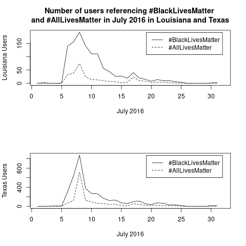

Matthew Haffner
Department of Geography and Anthropology
University of Wisconsin - Eau Claire
| BLM in text | ALM in text | BLM in profile | ALM in profile | |
|---|---|---|---|---|
| Percent black | 0.35 | 0.20 | 0.36 | 0.16 |
| Percent white | -0.30 | -0.17 | -0.30 | -0.15 |
| Percent Hisp. | -0.26 | -0.13 | -0.29 | -0.06 |
| Percent Asian | 0.35 | 0.33 | 0.37 | 0.35 |
